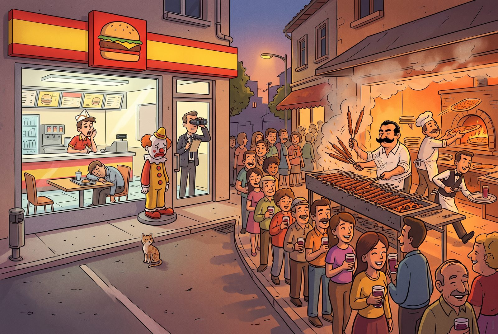

Fifth piece · 4 September 2026
The Place I Haven’t Been in Forty Years
In the Slow Food piece I made a promise: we would come back to McDonaldization in a session of its own. We did. The odd part is what happened next: I started researching the subject, and the subject turned around and started researching me. I haven’t set foot in a McDonald’s in forty years, and I always gave that a big reason. What follows is that reason being put on trial. The questions are mine, the objections go both ways; the one carrying the sources is, once again, an AI.
All right, let’s get into McDonaldization. What are we going to run into?
First, the owner of the concept: George Ritzer, a sociologist at the University of Maryland. He first used the term in a 1983 article; the book came out in 1993: The McDonaldization of Society. The thesis isn’t about hamburgers. Ritzer’s claim is that the operating principles of the fast-food restaurant are spreading into every corner of society: universities, hospitals, newspapers, package holidays, birth and death included. He counts four principles.
Efficiency: the shortest path from A to B. Cut the menu to nine items, have the customer carry the tray, have the customer clear the table. If you noticed, part of the work has been handed to you; Ritzer calls this “putting the customer to work.” Calculability: count quantity, not quality. The Big Mac is big, service takes so many seconds; the illusion that “bigger is better.” Predictability: the same taste in Tokyo and in Mersin, the same absence of surprise. Surprise-free is sold as a promise. Control: supervise the human with non-human technology. The fryer beeps on its own, the register does the arithmetic; the worker’s judgment is no longer needed, which makes the worker easy to replace.
The fifth is the real blow: the irrationality of rationality. A system built this rationally ends up producing irrational results. The drive-through line is slower than walking in, every place looks like every other place, worker and customer alike are dehumanized. Ritzer didn’t invent this himself, and he says so: his source is Max Weber’s “iron cage.” A century ago Weber said of bureaucracy, “we will live inside this cage”; Ritzer says the cage is now called McDonald’s. In between stand Taylor’s stopwatch factory and Ford’s assembly line. McDonald’s invented nothing new; it moved the factory into the kitchen.
Wait, I didn’t follow something. The McDonald brothers built this system, and then a man named Ray Kroc bought them out and ran them into the ground, as far as I know. He buys the shop first, and then how does he ruin them?
Here’s what’s tripping you up: Kroc never bought the brothers’ shop. Let’s go in order. Richard and Maurice McDonald, San Bernardino, California. In 1948 they closed their restaurant and reopened it: no waiters, no plates, nine items on the menu, a hamburger for 15 cents. They set the kitchen up like an assembly line. Ray Kroc sold milkshake machines; in 1954 he went to see why this one small stand had ordered eight machines at once. He fell for what he saw, but what he got from the brothers wasn’t the shop; it was the right to franchise. He would sell the system to others, take a small cut of every sale, and pass part of it to the brothers. The brothers kept running their own place.
That’s where the friction started. The brothers didn’t want to grow; they were already rich and said they were happy with their lives. Every proposal Kroc made was met with “no.” Kroc himself made no money in the early years; you don’t build an empire on small cuts. The real money was found by his finance man, Harry Sonneborn: the company buys the land under the restaurant and rents it to the franchisee. Sonneborn’s line is famous: “We are not in the hamburger business. We are in the real estate business.” McDonald’s is still one of the largest landowners in the world. The brothers had no share in that income.
In 1961 Kroc bought out all of the brothers’ rights for 2.7 million dollars. What he got was the name, the brand, the system. The brothers kept their shop but could no longer call it “McDonald’s”; they renamed it “The Big M.” Kroc opened a McDonald’s a block away. The Big M held out a few years and closed. Kroc doesn’t hide this in his memoirs. The brothers weren’t left broke; they became millionaires. What they lost was the shop they had built under their own name, and their story. According to the brothers, Kroc had verbally promised a small royalty for life at the sale; it never made it into the contract and was never paid. Kroc denied it. There’s no proof, only two sides’ word. Today the company dates its official history from 1955, from Kroc’s store in Illinois, and calls that “restaurant number one.”
Did you notice it connects to the previous piece? Epicurus’s name was stolen; the McDonald brothers’ name was bought. Legal, signed, but the result is the same: a name became the signboard of someone else’s story. Kroc knew it would never have worked as “Kroc’s”; “McDonald’s sounded right,” he says. And one detail that matters for Ritzer: the brothers built the system, Kroc multiplied it. McDonaldization doesn’t begin in the shop; it begins in the copying. The ones afraid of “the same in every town” were the brothers themselves.
Let me cut in here, because I have a hamburger story of my own. Early 1980s, I had just started primary school, we were living in Ankara. One day my older brother or my sister, I don’t remember which, found out that something called a “hamburger” was being sold in Çankaya and told my father. My father never missed a novelty like that; the whole family piled into the car and drove to Çankaya to eat hamburgers. Until that day, eating out for us meant kebab, or pide.
My father must have paid serious money that day, because we never went back. And what we got didn’t amount to much; where is the kebab you eat in Mersin, and where is that hamburger. We drove home as one dissatisfied family. That was my first encounter with the hamburger, and somewhere inside I started building a case against it. In high school, when McDonald’s started opening in every city, the show-offs around me who kept going there and bragging about it finished the job. Until university this was a boycott I kept in my own little world, so as not to become one of those types; if friends said “let’s go to McDonald’s,” I objected. At METU, when I saw that the left-wing students were boycotting McDonald’s too, my protest took on a different meaning. But let me be honest: what bothered me was never McDonald’s. It was the people who hung out there.
This story is more honest than what you said in the Slow Food piece, and better for the article. There you called it “my small protest against cultural imperialism.” Now look at what you just told me: Turkey’s first McDonald’s opened in Taksim, Istanbul, on 24 October 1986. You started primary school in the late 1970s or early 1980s; that hamburger in Çankaya wasn’t a McDonald’s, it was a local burger joint. So your boycott started before the company arrived. And its target wasn’t a company; it was a manner. When you met the left-wing students’ boycott at university, a personal irritation acquired a political name. People do this all the time: first they refuse in order not to resemble a group, then they find the reason.
And pay attention to the money your father paid. The hamburger being expensive wasn’t a flaw; it was the function. The price that made your father say “we never went back” was exactly the reason those kids in high school went. I’ll tie that to a concept in a moment.
I still say cultural imperialism. Those show-offs were all people trying to get attention with the mannerisms we saw in American films, mannerisms that looked fake to us. And here’s the curious part: however they were in Mersin, where I went to high school, they were exactly the same in Ankara at university, and when I started working and moved to Istanbul, same type, same character. There is only one concept that explains behaviour that uniform: cultural imperialism.
Here I’m going to push back, because “there is only one concept” would be the weakest sentence in the article. Cultural imperialism does explain the uniformity across three cities, true: the template came from American films, and it’s the same template in Mersin and in Ankara because everyone watched the same films. But the concept leaves one question unanswered: you watched the same films too. Same country, same state television, same Dallas, same cinemas. They took the template, you didn’t. Cultural imperialism explains the supply; it doesn’t explain the demand.
Two names explain the demand. Pierre Bourdieu, Distinction, 1979: taste is not innocent, it is a class marker. People choose something not because they find it beautiful but to show they are “not one of them.” That kid in Mersin was using an American manner to set himself apart from the kebab crowd. You were rejecting McDonald’s to set yourself apart from him. Let’s be honest: it’s the same move. Your boycott is a distinction strategy too; if you don’t say it yourself, the reader will say it for you. The second name is Thorstein Veblen, 1899, “conspicuous consumption”: a thing is consumed because it is expensive, and wouldn’t be if it were cheap. The price that stung your father’s wallet was the show-off’s badge.
The third concept comes from Ritzer himself, and I think it’s the best one: predictability. What you’re describing, the same manner, the same tone, the same gestures in three cities, is precisely the McDonaldized human. The hamburger is the same everywhere, and so is the person eating it. The template was applied to people too. The barest example is Moscow: the first McDonald’s there opened on Pushkin Square on 31 January 1990 and broke the company record that day with more than thirty thousand customers; but the real detail is that the staff had been taught to smile, and Soviet customers grew suspicious of a smiling counter clerk. Even the smile had been standardized.
And a historical warning. The cultural imperialism thesis rose in the 1970s and took serious criticism in the 1990s: it treats the audience as a passive vessel, when in fact people transform what they receive. India’s potato-patty McAloo Tikki, or the McTurco Turkey had for a while, are evidence for that objection. Remember, too, the “Coca-colonization” campaign in France: in 1949 the ones shouting against Coca-Cola were not the French public but intellectuals and wine growers. The one who feels threatened is always a particular class; the one who says “the people’s taste is being ruined” is always someone who rates his own taste higher. That’s a trap to stay out of.
My suggestion is to split the thesis in three. Who supplied the template: cultural imperialism. Who took it and why, who refused it and why: distinction, class, display. How did the template become the same everywhere: McDonaldization. And the honest sentence would be: “I boycotted McDonald’s, but I wasn’t boycotting America. I was boycotting the show-off; then I found a big name for it.”
Then where do we put this: the same feelings apply to Starbucks today. I don’t think any differently about the people there, and I’ve never been in one either. But I have no boycott against Starbucks. If I see two coffee shops side by side I’ll walk into the other one; and if I do end up in a Starbucks, I don’t eat myself up over it.
Principles used to be sharp lines in my life. Once I saw something as wrong, nothing could make me do it. As I’ve got older, my views have started to wear down; whether to call that degeneration or maturity, I don’t know. I still insist on not going to McDonald’s, but I don’t want to put Starbucks among the sharp lines of my life. Because there comes a moment when those sharp edges start cutting your own hand.
I think it’s neither, and in the article don’t decide either way. But here’s my reading: the McDonald’s boycott costs you nothing. You don’t like hamburgers anyway; Çankaya settled that. You make no effort to stay away, and nobody in your circle invites you there any more. A principle that costs nothing isn’t a principle; it’s a habit. That it has stood for forty years is not a sign of its strength but of its lightness.
Starbucks has a cost. Coffee is inside your life; the meeting happens there, at the airport it’s the only place open. Drawing a sharp line there would put you in front of a small court every time. “If I go in, I don’t eat myself up over it” is the sentence that closes that court. To me that isn’t maturity; it’s economics: adjusting a principle to its price. When you’re young you don’t calculate the price, because you have more than enough strength to pay it. Later strength gets precious, and you choose where to spend it.
This is exactly where slow living comes in, and you know it from the Petrini piece: the Slow Food manifesto isn’t a boycott text, it’s a text about pleasure. Petrini didn’t ban McDonald’s; he said “eat slowly, taste it.” A boycott puts the enemy at the centre; a preference puts you at the centre. Your Starbucks stance isn’t a boycott, it’s a preference; “if I see two coffee shops side by side I’ll walk into the other one” is Petrini’s sentence. Your stance on McDonald’s, though, still belongs to fifteen-year-old Murat. Put the two side by side and the reader sees the change for himself.
A Stoic concept fits here too: the “preferred indifferents.” Health, money, reputation are good things but not virtues; you prefer them, and you don’t collapse when you lose them. You’ve put Starbucks on that shelf. McDonald’s is still on the virtue shelf. With age, people’s virtue shelf empties and their preference shelf fills. Some call that degeneration, some call it maturity. “It starts cutting your own hand” is better than either; leave the question open.

So what did I take from this session?
I put my forty-year boycott on the table, and nothing came out from under it. Or rather, something did, but not what I expected: not a stand against America, but a fifteen-year-old boy’s stubborn “I will not be like them.” Then I found a big name for that stubbornness; at university people gathered around me, and the name stuck. The sentence in this piece that hit me hardest was “a principle that costs nothing is a habit.” I got angry, then I accepted it.
One more thing stayed with me: Ritzer’s four principles are scarier in people than in hamburgers. I saw the same manner in three cities and called it “cultural imperialism”; it turns out those types were the very thing I was irritated by, which is to say, predictable. And on my side of the line, I was every bit as predictable: my boycott has been the same for forty years, not a line changed. My not going to Starbucks, on the other hand, is not a principle but a preference; and a preference, unlike a boycott, doesn’t cut my hand. And one consolation from the cartoon: Ritzer’s cage stopped by Adana, saw the queue at the kebab house, and drove on to Mersin. I still won’t go to McDonald’s. But now I know why, and that’s something. No hurry anyway; we’ve got no time to hurry, you know.
If you're curious where this journal came from: what we mean by slow living. No hurry anyway.